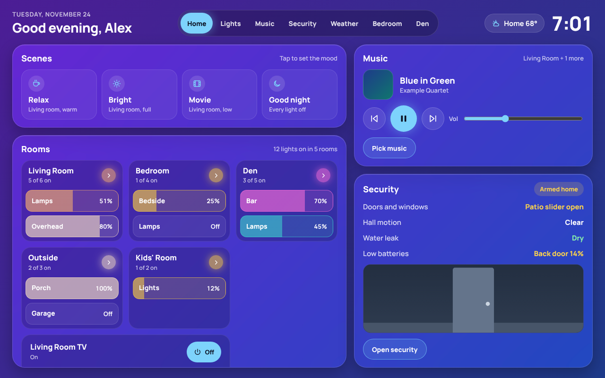
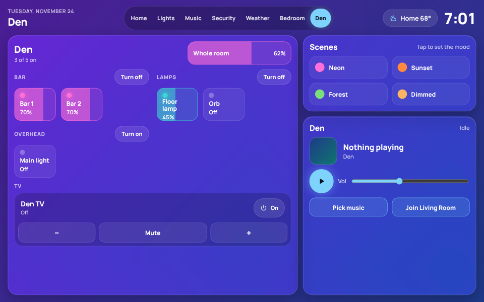
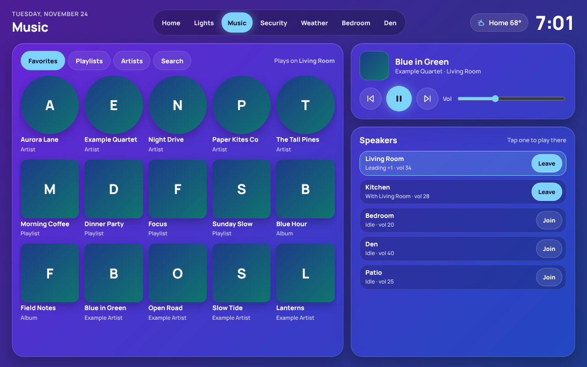

Home Assistant wall dashboard
Glass Wall Panel is a full-screen dashboard for a tablet on the wall. One file. You list your lights, speakers and sensors, it draws the rest.

Step zero
Same layout on all three, fitted to each screen. You tell the card which one with a single word.
device: fire10device: fire8device: ipaddevice: auto
Setup
You need Home Assistant running and a way to drop a file into its config folder. The File editor add-on is enough.
From this repository, grab dist/glass-wall-panel.js.
Put it in the www folder of your config folder. If www does not exist yet, create it and restart Home Assistant once.
/config/www/glass-wall-panel.jsSettings → Dashboards → three-dot menu → Resources → Add resource. Type: JavaScript module. URL:
/local/glass-wall-panel.js?v=3.0.0Settings → Dashboards → Add dashboard → New dashboard from scratch. Call it Wall Panel.
Open the new dashboard → pencil → three-dot menu → Raw configuration editor. Replace everything in there with one of these:
Every light.… and media_player.… in the example is a stand-in. Replace each with yours from Developer tools → States. Delete any section you do not own and its tab disappears. Save.
In landscape, in a kiosk browser or the Home Assistant app. Need Home Assistant's header back? Add ?edit=1 to the end.
http://homeassistant.local:8123/wall-panel/homeSkip the typing
The repository includes LLM_SETUP.md, written for Claude, ChatGPT or any other assistant. It covers the questions to ask, the full config format and the fixes for the usual snags.
Give it the file and say something like this.
Read LLM_SETUP.md from the Glass Wall Panel repository and set it up for me. My tablet is a Fire HD 8. Ask me for whatever you need, one step at a time.
Using it
Music tab: tap a speaker to aim at it, tap Join to add it to whatever is playing. Leave it alone for two minutes and the panel returns to Home.
